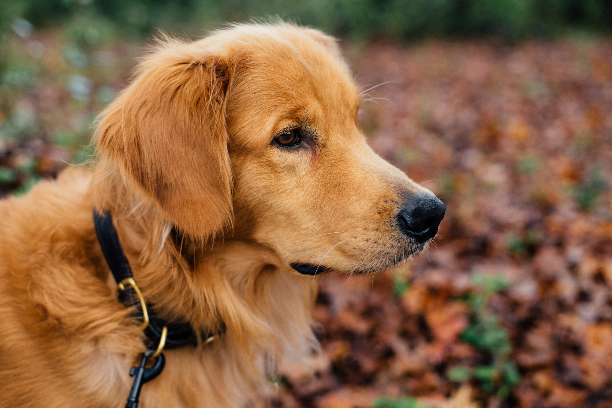
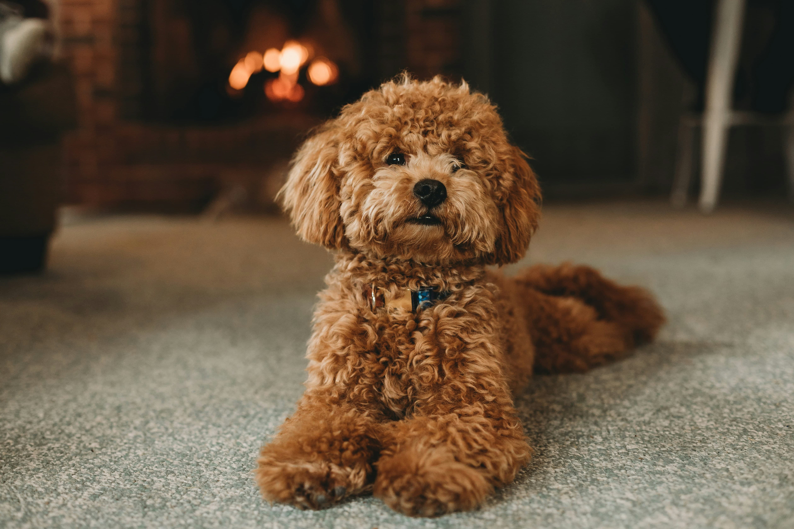
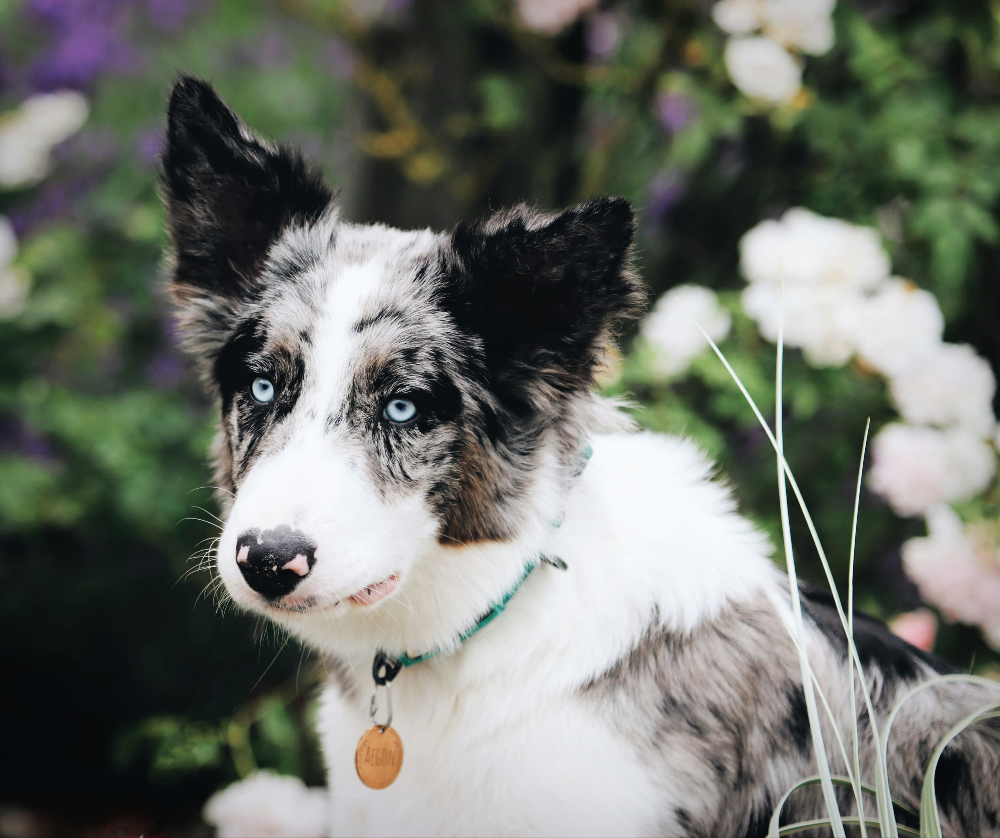
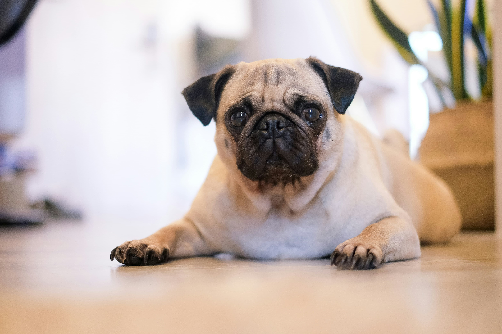

Petlândia do Gael
Esse é um site desenhado e feito para o Gael desfrutar dos seus amiguinhos.
Golden Retriever
Originário da Escócia, o Golden Retriever é conhecido por sua pelagem dourada, longa e brilhante. É um cão de porte médio a grande, com personalidade dócil, amigável e extremamente leal. Excelente para famílias, especialmente com crianças.
Shih Tzu

Originário da China, o Shih Tzu é pequeno em tamanho, mas grande em charme. Tem uma pelagem longa e sedosa que pode ser estilizada de várias maneiras. Além da beleza, é um cachorro afetuoso, leal e gosta de estar sempre perto de seus tutores.
Labrador Retriever

O Labrador Retriever é o cão mais popular em todo o mundo. Além de ser um ótimo nadador, é muito inteligente e de faro aguçado, o que os torna muito utilizados como cães-guia e pela polícia. São cães amáveis e excelentes para famílias.
Poodle
O Poodle é conhecido pela pelagem cacheada. Os cães da raça podem apresentar uma única cor, como branco, cinza, marrom, avermelhado ou preto. A raça tem quatro variações de tamanho: toy, mini, médio e grande. Pode viver bem em casas e apartamentos.
Bulldog Francês

Conhecido pelas dobrinhas na pele, o Bulldog Francês é brincalhão e animado. Pode viver em apartamentos, mas precisa de espaço para gastar energia. Tornou-se muito popular na França e é bastante procurado até hoje.
Beagle

O Beagle é um cão ativo, carinhoso e muito sociável. Além disso, é inteligente e fácil de treinar. É conhecido por seu faro aguçado e habilidade de seguir rastros por longas distâncias. Excelente para famílias com crianças.
Border Collie
O Border Collie é famoso por sua inteligência e habilidades como cão pastor. Originário da Escócia e Inglaterra, geralmente tem pelagem preta e branca. É muito ativo e precisa de exercícios físicos para se manter saudável e feliz.
Cavalier King Charles Spaniel

Raça britânica conhecida pela expressão doce e pelagem sedosa, geralmente em tons de castanho e branco. De porte pequeno, é afetuoso, adora colo e se dá muito bem em ambientes familiares.
Chihuahua

O Chihuahua é um cão de pequeno porte, mas com muita personalidade. É animado, atrevido e leal aos tutores. Adapta-se bem a apartamentos e é muito companheiro.
Pug
O Pug é uma raça de pequeno porte, conhecida por seu focinho achatado e olhos grandes. É carinhoso, sociável e se adapta facilmente à vida em apartamentos.